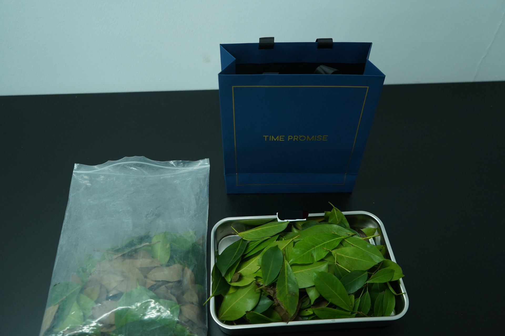
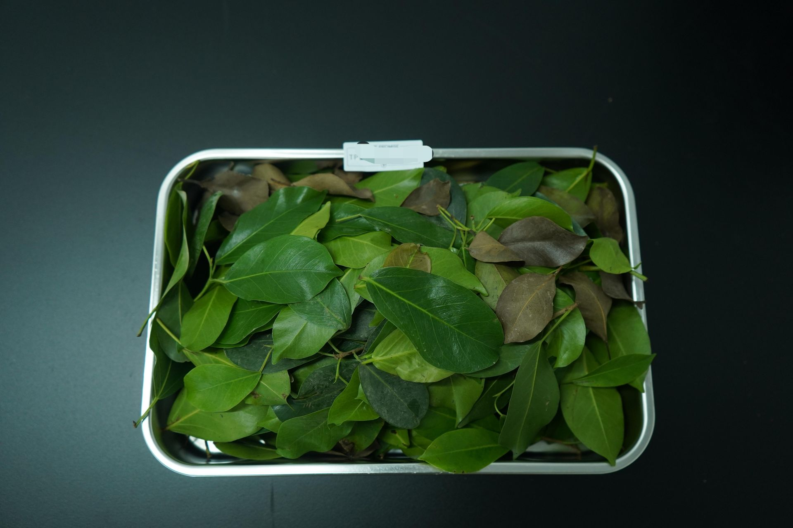
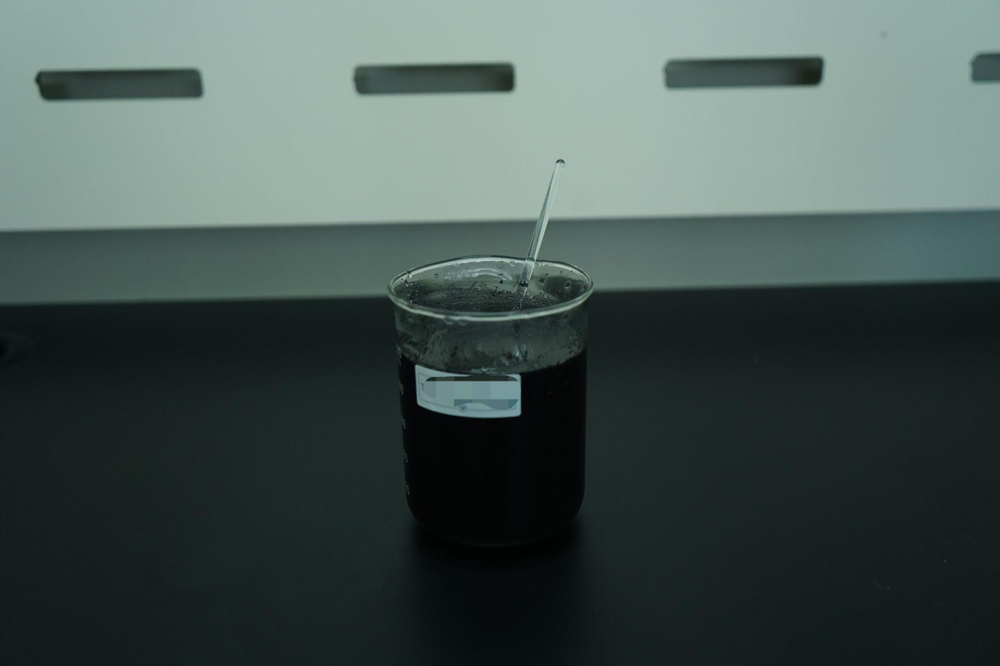
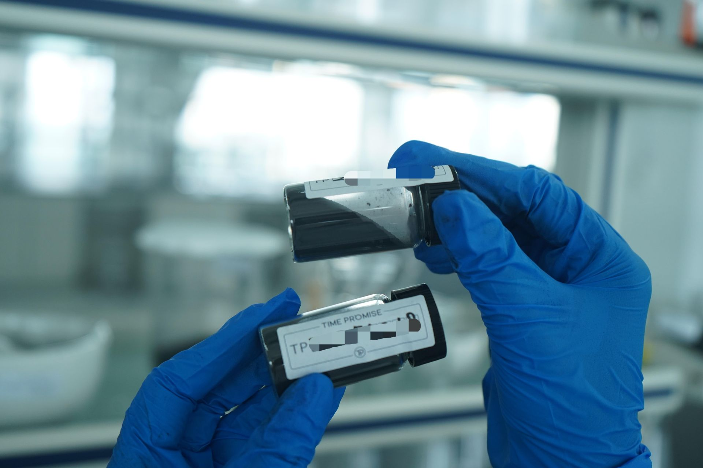
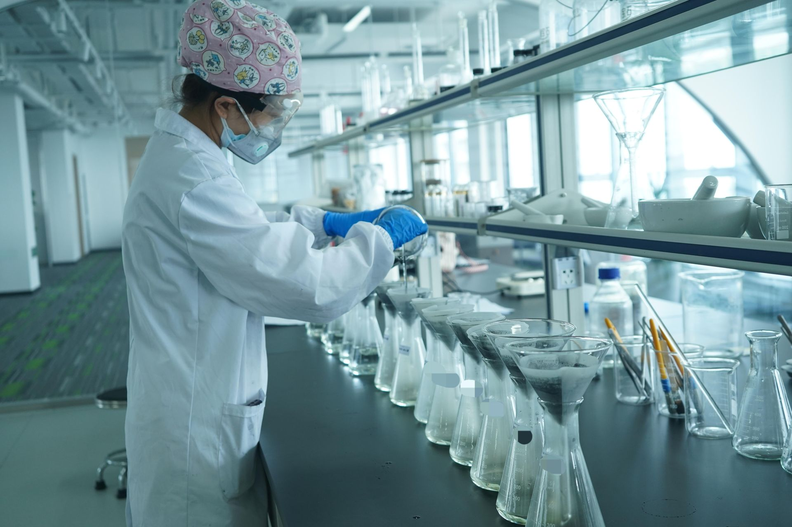

Interested in offering heritage carbon diamonds? Explore white-label partnership opportunities.
Case Study · Botanical · Ancient Tree Heritage
Leaves from a 500-year-old sacred banyan tree in Rongjiang County, Guizhou Province were transformed into three commemorative gem-quality diamonds. Botanical carbon from living heritage, preserved as permanent geological memory.
3
Diamonds Created
0.5–1.2
Diamond Size (ct)
89
Timeline (Days)
1,200g
Banyan Leaf Carbon
CCIC
Botanical Heritage Certified
15%
To Conservation Fund
The Rongjiang County Cultural Heritage Bureau wanted to create commemorative diamonds from leaves of a 500-year-old sacred banyan tree as heritage gifts for distinguished visitors and scholars. The challenge: botanical cellulose has a carbon conversion rate of only ~8%, compared to ~30% for animal hair.
Banyan leaves have high moisture content and dense cellulose structure. Standard carbon extraction protocols designed for keratin-based sources (hair, fur) were insufficient. The project required a modified botanical extraction protocol that could handle Ficus microcarpa chemistry without cross-contamination, while preserving the integrity of the heritage source material.
BioGem Lab developed a modified botanical carbon extraction protocol with extended acid hydrolysis cycles specifically for cellulose-dense plant matter. The process extended drying time from 72 hours to 168 hours and added two additional hydrolysis stages to break down lignin and hemicellulose matrices.
The extracted carbon was synthesized via HPHT at 5.5 GPa / 1,450°C, precision-cut to round brilliant specifications, and certified by CCIC with a special "Botanical Heritage Source" notation. Each diamond was presented in a custom wooden box containing the tree's story and a pressed leaf specimen from the original collection.
Three gem-quality diamonds were produced: 0.5ct, 0.8ct, and 1.2ct. All achieved F–H color grades and VS1–VVS2 clarity. The 89-day timeline was longer than typical animal-hair projects due to botanical extraction complexity, but well within the heritage bureau's ceremonial schedule.
The project became a pilot for the broader "Heritage Tree Diamond" program, now exploring similar initiatives with ginkgo and cypress trees. 15% of proceeds are directed to the local tree conservation fund. The original banyan tree was fully preserved — only naturally fallen leaves were collected over a 3-month period, with zero damage to the living tree.
A specialized botanical carbon extraction pipeline for ancient tree leaf memorial diamond synthesis.
Carbon Collection
1,200g dried banyan leaves collected over 3 months
Lab Operation
Extended 168-hour drying and cellulose decomposition
Purification
Extended acid hydrolysis for botanical cellulose purification
HPHT Growth
5.5 GPa, 1,450°C crystal synthesis
Cutting
Round brilliant precision cut to heritage bureau specifications
Certification
4C grading + CCIC Botanical Heritage Source certification
Delivery
Custom wooden case with pressed leaf specimen
Real process images from the Rongjiang Banyan Diamond production run — leaf collection, carbon extraction, purification, and HPHT synthesis.

Leaf Collection
Naturally fallen banyan leaves gathered in mesh bags for carbon processing

Leaf Preparation
Banyan leaves arranged on tray for extended 168-hour drying cycle

Carbon Extraction
Dark liquid in beaker showing active botanical carbon extraction process

Purified Carbon
Purified carbon powder in glass vials ready for HPHT synthesis

HPHT Synthesis Operation
Technician monitoring six-anvil press during crystal growth at 5.5 GPa and 1,450°C
"This tree has stood for over five centuries, witnessing the history of our county. Now, through these diamonds, a piece of its legacy can travel with scholars and visitors across the world. The tree lives on — not just in memory, but in carbon."
Heritage Bureau Director
Rongjiang County Cultural Heritage Bureau · Guizhou, China
5.5 GPa pressure, 1,450°C temperature synthesis. Technical specifications and process parameters.
Precision production with laboratory standards. Capacity, quality control, and fulfillment.
White-label OEM setup, MOQ terms, and onboarding process for B2B partners.
Yes. The Rongjiang Banyan Diamond project demonstrated that botanical cellulose from tree leaves can be successfully converted into gem-quality diamonds through modified carbon extraction and HPHT synthesis. However, botanical sources require specialized protocols: cellulose conversion rates are approximately 8% versus 30% for animal keratin, necessitating extended acid hydrolysis and longer drying cycles.
This is a special certification classification developed for the Rongjiang project that distinguishes botanical-origin diamonds from animal-origin or synthetic-only sources. It verifies that the carbon was extracted from a specific documented botanical source (in this case, the 500-year-old Rongjiang banyan tree), includes the collection period and location, and confirms that no living tree was damaged in the process.
The three diamonds achieved F–H color grades and VS1–VVS2 clarity, all cut to round brilliant specifications. The 0.5ct, 0.8ct, and 1.2ct stones were produced over 89 days. Each unit underwent full 4C gemological assessment and received independent CCIC grading reports with the Botanical Heritage Source notation.
Botanical cellulose requires a fundamentally different decomposition pathway. While keratin (hair, fur) breaks down cleanly under standard thermal decomposition, cellulose contains lignin and hemicellulose matrices that require extended acid hydrolysis. The Rongjiang protocol added two hydrolysis stages and extended drying from 72 hours to 168 hours, resulting in a ~89 day total timeline versus ~60 days for animal-hair projects.
The Rongjiang Banyan Diamond project became the pilot for a broader Heritage Tree Diamond initiative. The program partners with cultural heritage institutions and local governments to create commemorative diamonds from historically significant trees — using only naturally fallen leaves, with a percentage of proceeds funding tree conservation. Similar projects with ginkgo and cypress trees are currently in development.
We partner with cultural institutions, heritage bureaus, and conservation organizations to create commemorative diamonds from historically significant botanical sources.